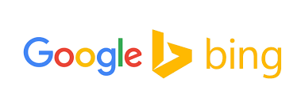
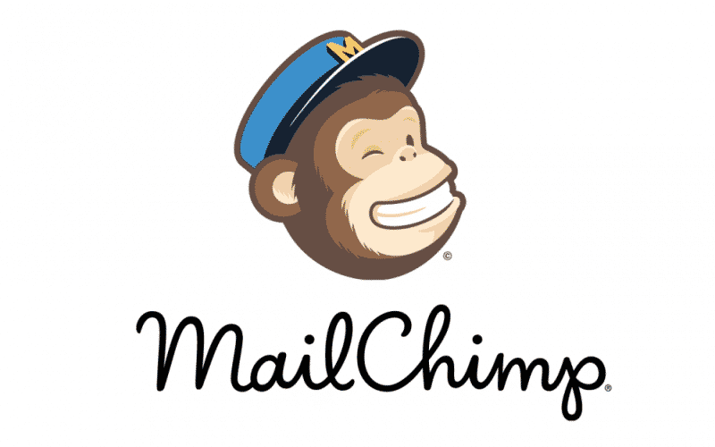
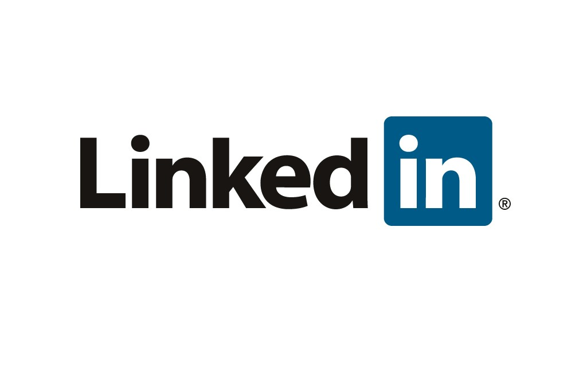
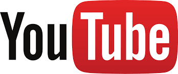
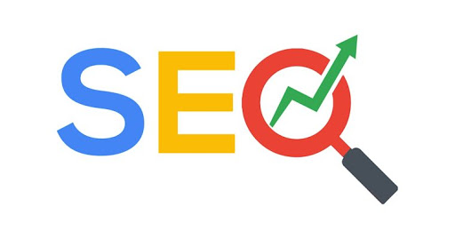
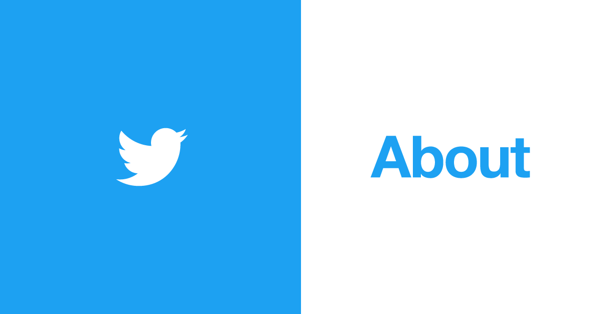

Click learn more to learn more about Facebook Ads and Pages.
Facebook over the past decade or so has become extremely busy. There are over a billion people on Facebook. From this huge prospect base, you can be sure that there will be people interested in your services or products.
Facebook ads are cost effective, targeted, filtered by demographics, location specific and extremely useful. You can start advertising on Facebook for very cheap and there's no limit to how much you can invest.
You choose the amount you want to invest and Facebook gives you what you pay for; cost effective advertising solutions.
There are many configurations for an advertising campaign on Facebook. You can choose setups to get more website traffic, page likes or app downloads. There is a solution for everybody.
Facebook pages are used to establish a business or organization on Facebook. They provide a service to post, add images, a contact number and website address. They allow you to engage with your audience.
Hashtags are really useful to get some free traffic.
Search Engine Marketing
Search engine marketing or sometimes known as PPC (Pay-Per-Click), is mainly Bing and Google's advertising solution on their search engine, to get at the top of the search results. Pay Per Click means literally, you pay for every prospect that clicks your search ad.
Google Ads is the most popular and is very cost effective. Cost depends on competition for the keywords you would like to be searched for. For example, insurance would be a very costly keyword to advertise with as there are many insurance companies all doing the same thing.
Bing Ads is the same as Google for the most part only, it's a little less popular. We recommend you do both, to get the maximum results.
People wishing to advertise with search engine marketing are prompted to:
Conduct keyword research and select a set of keywords related to their website or product
Select a geographic location for the ad to be displayed within
Create a text-based ad to display in the search results
Bid on a price they are willing to pay for each click on their ad.
Search Engine Marketing is applicable to those who want to boost website traffic.

Email Marketing
Email marketing is the process of sending emails to promote a website, product or service. It involves writing pitches and copy to get the interest of a prospect. You can use any email client but you must stay within the sending limits of your provider. Sending limits vary from provider to provider.
Some mass mail sending programs (require an email subscriber list)
Mailchimp
ActiveCampaign
Amazon SES
MailGun
SendGrid
Advantages of email marketing
Free or cheap
Massive customer base
Fast

LinkedIn Ads & Pages
LinkedIn is a popular social network, aimed at professionals. It is particularly useful when you want to target executives and business owners as they will have profiles and company pages. It's more expensive than Facebook but could have higher returns as the customer base is more wealthy (in general).
LinkedIn Sales Navigator is a paid product that allows you to perform complex and filtered searches of people in your country or internationally. It allows you to select a company position, company, company size and so much more. It allows you to find a subset of professionals performed by giving characteristics. nkedIn profiles contain more detailed and up-to-date “professional” information compared to what people list on their personal profiles on Facebook, etc.
To create an Ad you need the following:
A LinkedIn account
Basic understanding of your audience
Ad copy
Video (optional)

YouTube Ads & Channels
YouTube is the second most popular search engine in the world. Trailing behind Google, it's extremely popular. There is a video advertising solution offered by them that allows a marketer to place videos before standard videos to show the people your products, services and business. Costs vary, but it could definitly be worth the investment. Apart from YouTube ads, there's a free option. You can upload your own videos promoting your products or services. It works very well to build
up a subscriber base. Then sell to them after. One strategy is to provide either informative or entertaining content and try to sell to them after.
We can launch you, an advertisement on YouTube or create you a channel. We will go to thrid party sources, get a video advertisement made up for you and post it onto their advertising platform.

Search Engine Optimization
Search Engine Optimization or SEO, for short is the process of applying certain design techniques to websites to improve their search engine rankings. There are many approaches and it's best to apply all. Meta tags are information about information and they are at the start of the header tag in a HTML file. There are two main ones you use in SEO, meta description and meta keywords. Description is what will display in the search engine results under the link you click. You see this all the time. Meta keywords are keyowrds that you want your website to be shown for. There is a rough guidline to use about 10 and
they are heavily used in the Google and Bing Search algorithms. Another strategy is to use the content of your website. Make sure to use keywords through paragraphs and header text. The algorithms also like the page names of your HTML documents. If using a JavaScript framework this will be the titles of your routes. The domain itself is heavily used for keywords and it makes sense to describe your service in your business name.
SEO strategy
Meta description
Meta keywords
Title and paragraph content
Domain itself
Routes/Page names

Twitter Ads & Pages
Twitter is a well established social network. Even though all Twitter Ads are tagged with the phrase, “Promoted”, they look like every other non-sponsored tweet. The goal of launching a promotional campaign on Twitter is to increase the reach of your posts. At the same time, and thanks to social medias’ ability to segment audiences extremely well, you can focus on getting those users who comply with your target audience.
Twitter Ads works similarly to advertising on Google AdWords. However, in lieu of establishing pay/cost per click (PPC/CPC respectively), a ‘cost per engagement’ (CPE) formula is implemented. This simply means that you only pay when users interact with an Ad; in other words, when a user clicks on it, expands it, RTs it, favorites it or responds to it.
Immediacy: Twitter is the ‘microblogging’ social network and is primarily characterized by its shortness. On Twitter, the “here and now” is what’s important. In this sense, the obtained results (assuming everything is well-planned) come quickly.
Effective Business Goals: thanks to the different types of campaigns offered by Twitter Ads, (in addition to its massive network of users), it’s quite easy to put together attainable business goals with the help of Twitter Ads. As an added bonus, you can also measure the progress/statistics of your ads.
User integration: even though advertised tweets are tagged with the word “Promoted”, (which is clearly visible amongst ‘organic tweets’), they are seamlessly integrated within a user’s timeline and offer the same reactionary options as non-promoted tweets (e.g. RT, like, etc.)
Multi-display and mobile version: Twitter allows for a perfect viewing experience regardless of the screen size/type; it's also perfectly optimized for cell phones. This is extremely relevant today and it will be even more so in the future since, every day, there are more and more people using their phones instead of their computers.
Better CTR: various studies have concluded that Twitter Ads have a better CTR maintained over time. Compared to the rest of the social media networks, Twitter Ads seem to be more effective in this field. This could be due to the fact that there are less companies taking advantage of Twitter than there are with other social networks (which are already quite saturated).
Apart from choosing Twitter Ads to get a good CPE price, you can choose the free option. Simply create a twitter account, gain some followers and post regularly. Use hashtags to your advantage to scale your posts worldwide.

Google AdSense
Google AdSense are the add pictures you see on most popular websites online. It is the advertising solution for website users that want to monetize their traffic or on the flip-side if someone wants to get more traffic they can pay for Google AdSense Ads.
Why Choose Google AdSense as an advertiser
Cheap
Established
Huge Customer Base
Targeted
Get in touch today and we will help you monetize your website, or advertise it with Google AdSense.